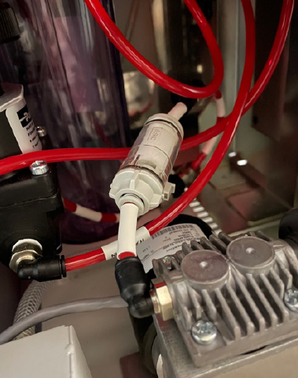

Replacing the Pneumatics Compressor Filter
This topic includes information about how to replace the pneumatics compressor filter.
Important: The instrument must be powered down and disconnected from the power source before you perform this procedure. See
Turning Off the Instrument for more information.
Safety Reminder
Servicing the DxI 9000 instrument involves potential risks for pinch and puncture, electrical shock, and exposure to hazardous materials. You must mitigate these risks by taking appropriate countermeasures. See Safety for more information.
| Table of Contents |
|---|
| Recommended Tools |
| Replacing the Pneumatics Compressor Filter |
| Making Adjustments |
| Running the Bulk Feeder Exerciser |
| Verification |
Recommended Tools
The following tools are recommended for replacement of the components listed in this topic:
- 2.5mm hex driver for M3 screws
- 3mm hex driver for M4 screws
Replacing the Pneumatics Compressor Filter
- Turn off the instrument. See Turning Off the Instrument for more information.
- Wait 30 seconds.
- Remove the old filter
- Firmly insert the tubing into the quick disconnect fittings on the new filter.
Note: Confirm the direction of flow by the arrow on the side of the filter. The arrow should point toward the check valve. Ensure the labels on the tubing do not interfere with the quick disconnect fittings on the filter. If necessary adjust the label position by sliding them on the tubing.
- Place the tubing and filter inside the pneumatics cavity as shown. Ensure tubing is not kinked.

- Turn on instrument and run verification .
Making Adjustments
Make necessary adjustments (12psi, 20psi, and 32psi/H.A.) for affected components and subsystems.
Running the Bulk Feeder Exerciser
- Turn on the instrument. See Turning On the Instrument for more information.
- Initialize the instrument. See Initializing the Instrument for more information.
- In the Console App run the Vessel Exerciser, Bulk Feeder, for 100 reps.
- Select the SYSTEM RUNNING button and go to to enter the instrument into a YELLOW (Paused) status.
- In the Console App go to and select Start Session.
- Select Exerciser to open the Exerciser page.
- Select RV Feeder.
- Type 100 in the Repetition box.
- Select Request.
- Confirm that you observe no errors for low system pressure.
Verification
Complete the verification of service repair. See Verification of Service Repairs for more information.